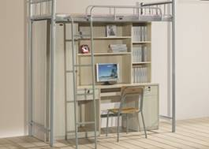

【男生女生】

--------------------------------
The voice of a girl:宿舍文化从宿舍活动体现，而宿舍活动应该以比较安静比较有益的活动为主，比如集体看书，互相交流各自的读书心得等等，而不是在宿舍虚度光阴，无所事事。这样，才能让我们和舍友们一起共同建设一个文明有爱的大集体。
The voice of a boy:对于出门在外的我们，宿舍无疑就是我们另一个家，理应是我们休息的地方，在外面忙碌了一天，回到家应该是放松的时候，因此，宿舍活动应该以轻松愉快为主，比如集体打打游戏，看看电影、小说等。这样才能使我们的身体心灵都得到充分放松，从而营造了一种轻松的宿舍氛围，体现了一种和谐的宿舍文化。
小编所感：宿舍文化对于我们尤其重要，因此，怎样塑造我们的宿舍文化，以及塑造一种怎样的宿舍文化就成了我们必须思考的问题。其实，宿舍文化没必要那么严肃，但也不能那么悠闲，我们应该从中取个度，让我们在宿舍生活中既能放松自己又能充实自己。最后，希望大家都行动起来，积极建设一个文明、向上的宿舍集体。
（如果你对这个话题有想说的话，或者有新的话题想与大家谈论，欢迎在“南邮青年“人人主页下留言，参与讨论，更多话题敬请关注《南邮青年》人人主页，每周五晚“南邮青年”人人主页将发布【男生女生】的讨论话题，参与讨论者将有机会获得《南邮青年》限量版精美礼品。）